전기산업기사 (2015-03-08 기출문제)
1과목: 전기자기학
1. 공간도체 중의 정상 전류밀도를 i, 공간 전하밀도를 p라고 할 때, 키르히호프의 전류 법칙을 나타내는 것은?
- i=0
- divi=0
- i=∂p/∂t
- divi=∞
(정답률: 71%)

2. 무한 길이의 직선 도체에 전하가 균일하게 분포되어 있다. 이 직선 도체로부터 l인 거리에 있는 점의 전계의 세기는?
- l에 비례한다.
- l에 반비례한다.
- l2에 비례한다.
- l2에 반비례한다.
(정답률: 59%)
3. 전계의 세기를 주는 대전체 중 거리 r에 반비례하는 것은?
- 구전하에 의한 전계
- 점전하에 의한 전계
- 선전하에 의한 전계
- 전기 쌍극자에 의한 전계
(정답률: 70%)
4. 그림과 같은 자기회로에서
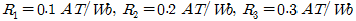
이고, 코일은 10회 감았다. 이때 코일에 10A의 전류를 흘리면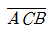
간에 투과하는 자속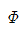
는 약 몇 Wb인가?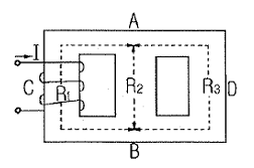
- 2.25×102
- 4.55×102
- 6.50×102
- 8.45×102
(정답률: 53%)
5. 6.28 A가 흐르는 무한장 직선 도선상에서 1m 떨어진 점의 자계의 세기[A/m]는?
- 0.5
- 1
- 2
- 3
(정답률: 72%)
6. 유전율 E, 투자율 μ인 매질 중을 주파수 f[hz]의 전자파가 전파되어 나갈 때의 파장은 몇 m인가?
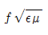
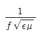
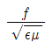
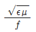
(정답률: 73%)
7. 정전용량 6[㎌], 극간거리 2mm의 평판 콘덴서에 300[μC]의 전하를 주었을 때 극판간의 전계는 몇 V/mm 인가?
- 25
- 50
- 150
- 200
(정답률: 50%)
8. 전자석의 재료(연철)로 적당한 것은?
- 잔류 자속밀도가 크고, 보자력이 작아야 한다.
- 잔류 자속밀도와 보자력이 모두 작아야 한다.
- 잔류 자속밀도와 보자력이 모두 커야 한다.
- 잔류 자속밀도가 작고, 보자력이 커야 한다.
(정답률: 67%)
9. 유전체에 가한 전계 E[V/m]와 분극의 세기 P[C/m2], 전속밀도D[C/m2]간의 관계식으로 옳은 것은?
- P=E0(ES-1)E
- P=E0(ES+1)E
- D=E0E-P
- D=E0ESE+P
(정답률: 78%)
10. 반지름이 r1인 가상구 표면에 +Q의 전하가 균일하게 분포되어 있는 경우, 가상구 내의 전위 분포에 대한 설명으로 옳은 것은?
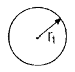
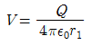
로 반지름에 반비례하여 감소한다.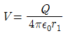
로 일정하다.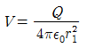
로 반지름에 반비례하여 감소한다. 로 일정하다.
로 일정하다.
(정답률: 58%)
11. 전계 E==i3x2+j2xy2+kx2yz의 divE는 얼마인가?
- -i6x+jxy+kx2y
- i6x+j6xy+kx2y
- -6x-6xy+kx2y
- 6x+4xy+x2y
(정답률: 69%)
12. 정현파 자속으로하여 기전력이 유기될 때 자속의 주파수가 3배로 증가하면 유기 기전력은 어떻게 되는가?
- 3배 증가
- 3배 감소
- 9배 증가
- 9배 감소
(정답률: 65%)
13. W1,W2의 에너지를 갖는 두 콘덴서를 병렬로 연결하였을 경우 총 에너지 W에 대한 관계식으로 옳은 것은? (단, W1≠W2이다.)
- W1+W2＞W
- W1+W2＜W
- W1+W2=W
- W1-W2
(정답률: 61%)
14. 10V의 기전력을 유기시키려면 5초간에 몇 Wb의 자속을 끊어야 하는가?
- 2
- 10
- 25
- 50
(정답률: 67%)
15. 완전 유전체에서 경계조건을 설명한 것 중 맞는 것은?
- 전속밀도의 접선성분은 같다.
- 전계의 법선성분은 같다.
- 경계면에 수직으로 입사한 전속은 굴절하지 않는다.
- 유전율이 큰 유전체에서 유전율이 작은 유전체로 전계가 입사하는 경우 굴절각은 입사각보다 크다.
(정답률: 59%)
16. 두 자기인덕턴스를 직렬로 연결하여 두 코일이 만드는 자속이 동일 방향일 때 합성 인덕턴스를 측정하였더니 75mH가 되었고, 두 코일이 만드는 자속이 서로 반대인 경우에는 25mH가 되었다. 두 코일의 상호인덕턴스는 몇 mH인가?
- 12.5
- 20.5
- 25
- 30
(정답률: 69%)
17. 투자율이 다른 두 자성체의 경계면에서 굴절각과 입사각의 관계가 옳은 것은? (단, μ:투자율 θ1:입사각, θ2:굴절각 이다.)
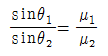
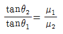
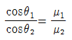
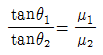
(정답률: 79%)
18. E=[(sin x)ax+(cos x)ay]e-y[V/m]인 전계가 자유공간 내에 존재한다. 공간 내의 모든 곳에서 전하밀도는 몇 C/m3인가?
- sinx
- cosx
- e-y
- 0
(정답률: 74%)
19. 진공 중에 같은 전기량 +1C의 대전체 두 개가 약 몇 m 떨어져 있을 때 각 대전체에 작용하는 반발력이 1N인가?
- 3.2×10-3
- 3.2×103
- 9.5×10-4
- 9.5×104
(정답률: 46%)
20. l1=∞, l21m의 두 직선도선을 50cm의 간격으로 평행하게 놓고, l1을 중심축으로 하여 l2를 속도 100 m/s로 회전시키면 l2에 유기되는 전압은 몇 V인가? (단, l1에 흐르는 전류는 50 mA이다.)
- 0
- 5
- 2×10-6
- 3×10-6
(정답률: 61%)
2과목: 전력공학
21. 뇌해 방지와 관계가 없는 것은?
- 매설지선
- 가공지선
- 소호각
- 댐퍼
(정답률: 79%)
22. 선로 임피던스가 Z인 단상 단거리 송전선로의 4단자 정수는?
- A=Z, B=Z, C=0, D=1
- A=1, B=0, C=Z, D=1
- A=1, B=Z, C=0, D=1
- A=0, B=1, C=Z, D=0
(정답률: 73%)
23. 송전선로의 안정도 향상 대책이 아닌 것은?
- 병행 다회선이나 복도체 방식 채용
- 계통의 직렬리액턴스 증가
- 속응 여자방식 채용
- 고속도 차단기 이용
(정답률: 70%)
24. 저압 뱅킹 방식에 대한 설명으로 틀린 것은?
- 전압 동요가 적다.
- 캐스케이딩 현상에 의해 고장 확대가 축소된다.
- 부하 증가에 대해 융통성이 좋다.
- 고장 보호 방식이 적당할 때 공급 신뢰도는 향상된다.
(정답률: 71%)
25. 리클로저에 대한 설명으로 가장 옳은 것은?
- 배전선로용은 고장구간을 고속 차단하여 제거한 후 다시 수동조작에 의해 배전이 되도록 설계된 것이다.
- 재폐로 계전기와 함께 설치하여 계전기가 고장을 검출하고 이를 차단기에 통보, 차단하도록 된 것이다.
- 3상 재폐로 차단기는 1상의 차단이 가능하고 무전압 시간을 20~30초로 정하여 재폐로 하도록 되어있다.
- 배전선로의 고장구간을 고속 차단하고 재전송하는 조작을 자동적으로 시행하는 재폐로 차단장치를 장비한 자동차단기이다.
(정답률: 67%)
26. 원자력 발전소와 화력발전소의 특성을 비교한 것 중 틀린 것은?
- 원자력 발전소는 화력 발전소의 보일러 대신 원자로와 열교환기를 사용한다.
- 원자력 발전소의 건설비는 화력발전소에 비해 싸다.
- 동일 출력일 경우 원자력 발전소의 터빈이나 복수기가 화력 발전소에 비하여 대형이다.
- 원자력 발전소는 방사능에 대한 차폐 시설물의 투자가 필요하다.
(정답률: 77%)
27. 송전선로에서 역섬락을 방지하는 가장 유효한 방법은?
- 피뢰기를 설치한다.
- 가공지선을 설치한다.
- 소호각을 설치한다.
- 탑각 접지저항을 작게 한다.
(정답률: 75%)
28. 우리나라의 특고압 배전방식으로 가장 많이 사용되고 있는 것은?
- 단상 2선식
- 단상 3선식
- 3상 3선식
- 3상 4선식
(정답률: 79%)
29. 양 지지점의 높이가 같은 전선의 이도를 구하는 식은? (단, 이도는 D[m], 수평장력은 T[kg], 전선의 무게는 W[kg/m], 경간은 S[m]이다.)
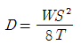
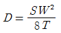
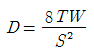
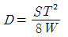
(정답률: 73%)
30. 배전선의 역률개선에 따른 효과로 적합하지 않은 것은?
- 전원측 설비의 이용률 향상
- 선로 절연에 요하는 비용 절감
- 전압강하 감소
- 전로의 전력손실 경감
(정답률: 68%)
31. 발전기의 정태 안정 극한 전력이란?
- 부하가 서서히 증가할 때의 극한 전력
- 부하가 갑자기 크게 변동할 때의 극한 전력
- 부하가 갑자기 사고가 났을 때의 극한 전력
- 부하가 변하지 않을 때의 극한 전력
(정답률: 76%)
32. 유역면적 80km2, 유효낙차 30m, 연간 강우량 1500mm의 수력발전소에서 그 강우량의 70%만 이용하면 연간 발전 전력량은 몇 kwh인가?(단, 종합효율은 80%이다.)
- 5.49×107
- 1.98×107
- 5.49×106
- 1.98×106
(정답률: 29%)
33. 낙차 350m, 회전수 600rpm인 수차를 325m의 낙차에서 사용할 때의 회전수는 약 몇 rpm인가?
- 500
- 560
- 580
- 600
(정답률: 49%)
34. 가공 송전선의 코로나를 고려할 때 표준상태에서 공기의 절연내력이 파괴되는 최소 전위경도는 정현파 교류의 실효값으로 약 몇 kV/cm 정도인가?
- 6
- 11
- 21
- 31
(정답률: 62%)
35. 차단기의 개폐에 의한 이상전압의 크기는 대부분의 경우 송전선 대지 전압의 최고 몇 배 정도인가?
- 2배
- 4배
- 6배
- 8배
(정답률: 57%)
36. 선로의 작용 정전용량 0.008㎌/㎞, 선로의 길이 100㎞, 전압 37000V이고, 주파수 60㎐일 때, 한상에 흐르는 충전전류는 약 몇 A인가?(오류 신고가 접수된 문제입니다. 반드시 정답과 해설을 확인하시기 바랍니다.)
- 6.7
- 8.7
- 11.2
- 14.2
(정답률: 60%)
37. 송전선로의 단락보호 계전방식이 아닌 것은?
- 과전류 계전방식
- 방향단락 계전방식
- 거리 계전방식
- 과전압 계전방식
(정답률: 53%)
38. 동일 전력을 동일 선간전압, 동일 역률로 동일 거리에 보낼 때, 사용하는 전선의 총중량이 같으면, 단상 2선식과 3상 3선식의 전력 손실비(3상 3선식/단상 2선식)는?
- 1/3
- 1/2
- 3/4
- 1
(정답률: 58%)
39. 정정된 값 이상의 전류가 흘러 보호 계전기가 동작할 때 동작 전류가 낮은 구간에서는 동작 전류의 증가에 따라 동작 시간이 짧아지고, 그 이상이면 동작 전류의 크기에 관계없이 일정한 시간에서 동작하는 특성을 무슨 특성이라 하는가?
- 정한시 특성
- 반한시 특성
- 순시 특성
- 반한시성 정한시 특성
(정답률: 70%)
40. 어떤 건물에서 총설비 부하용량이 850kW, 수용률이 60%이면, 변압기 용량은 최소 몇 kVA로 하여야 하는가? (단, 설비 부하의 종합역률은 0.75이다.)
- 740
- 680
- 650
- 500
(정답률: 71%)
3과목: 전기기기
41. 브러시의 위치를 바꾸어서 회전방향을 바꿀 수 있는 전기 기계가 아닌 것은?
- 톰슨형 반발 전동기
- 3상 직권 정류자 전동기
- 시라게 전동기
- 정류자형 주파수 변환기
(정답률: 40%)
42. 직류 전동기의 역기전력에 대한 설명 중 틀린 것은?
- 역기전력이 증가할수록 전기자 전류는 감소한다.
- 역기전력은 속도에 비례한다.
- 역기전력은 회전방향에 따라 크기가 다르다.
- 부하가 걸려있을 때에는 역기전력은 공급전압보다 크기가 작다.
(정답률: 59%)
43. 정격 6600/220V인 변압기의 1차측에 6600V를 가하고 2차측에 순저항 부하를 접속하였더니 1차에 2A의 전류가 흘렀다. 이때 2차 출력[kVA]은?
- 19.8
- 15.4
- 13.2
- 9.7
(정답률: 57%)
44. 단자전압 220V, 부하전류 50A인 분권 발전기의 유기 기전력[V]은? (단, 전기자 저항 0.2Ω, 계자 전류 및 전기자 반작용은 무시한다.)
- 210
- 225
- 230
- 250
(정답률: 67%)
45. 200kW, 200V의 직류 분권 발전기가 있다. 전기자 권선의 저항이 0.025Ω 일 때 전압 변동률은 몇 %인가?
- 6.0
- 12.5
- 20.5
- 25.0
(정답률: 61%)
46. 6극 직류 발전기의 정류자 편수가 132, 단자전압이 220V, 직렬 도체수가 132개이고 중권이다. 정류자 편간 전압은 몇 V인가?
- 5
- 10
- 20
- 30
(정답률: 55%)
47. 3300/210V, 5kVA 단상변압기의 퍼센트 저항강하 2.4%, 퍼센트 리액턴스강하 1.8%이다. 임피던스 와트[W]는?
- 320
- 240
- 120
- 90
(정답률: 39%)
48. 변압기유가 갖추어야 할 조건으로 옳은것은?
- 절연내력이 낮을것
- 인화점이 높을것
- 비열이 적어 냉각효과가 클 것
- 응고점이 높을것
(정답률: 63%)
49. 단상 유도전동기의 기동토크에 대한 사항으로 틀린 것은?
- 분상 기동형의 기동토크는 125% 이상이다.
- 콘덴서 기동형의 기동토크는 350% 이상이다.
- 반발 기동형의 기동토크는 300% 이상이다.
- 세이딩 코일형의 기동토크는 40~80% 이상이다.
(정답률: 69%)
50. 3상 동기 발전기에 평형 3상 전류가 흐를 때 반작용은 이 전류가 기전력에 대하여 (A)때 감자작용이 되고, (B)때 증자작용이 된다. A, B의 적당한 것은?
- A : 90°뒤질, B : 90° 앞설
- A : 90°앞설, B : 90° 뒤질
- A : 90°뒤질, B : 동상일
- A : 동상일, B : 90° 앞설
(정답률: 69%)
51. 유도 전동기의 슬립을 측정하려고 한다. 다음 중 슬립의 측정법이 아닌 것은?
- 동력계법
- 수화기법
- 직류 밀리볼트계법
- 스트로보스코프법
(정답률: 49%)
52. 3상 유도 전동기 원선도 작성에 필요한 시험이 아닌것은?
- 저항 측정
- 슬립 측정
- 무부하 시험
- 구속 시험
(정답률: 73%)
53. 스테핑 모터의 여자 방식이 아닌 것은?
- 2~4상 여자
- 1~2상 여자
- 2상 여자
- 1상 여자
(정답률: 64%)
54. 단상 반발 전동기에 해당되지 않는 것은?
- 아트킨손 전동기
- 슈라게 전동기
- 데리 전동기
- 톰슨 전동기
(정답률: 60%)
55. 극수 6, 회전수 1200rpm의 교류 발전기와 병행운전하는 극수 8의 교류 발전기의 회전수는 몇 rpm 이어야 하는가?
- 800
- 900
- 1⑤0
- 1100
(정답률: 73%)
56. 반도체 사이리스터에 의한 제어는 어느 것을 변화시키는 것인가?
- 주파수
- 전류
- 위상각
- 최대값
(정답률: 68%)
57. 3상 동기 발전기의 매극 매상의 슬롯수를 3이라고 하면, 분포권 계수는?
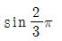
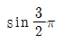
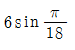
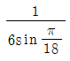
(정답률: 63%)
58. △-Y 결선의 3상 변압기군 A와 Y-△ 결선의 변압기군 B를 병렬로 사용할 때 A군의 변압기 권수비가 30이라면 B군의 변압기 권수비는?
- 10
- 30
- 60
- 90
(정답률: 39%)
59. 동기 발전기에서 기전력의 파형이 좋아지고 권선의 누설리액턴스를 감소시키기 위하여 채택한 권선법은?
- 집중권
- 형권
- 쇄권
- 분포권
(정답률: 71%)
60. 3상 60Hz 전원에 의해 여자되는 6극 권선형 유도전동기가 있다. 이 전동기가 1150rpm으로 회전할 때 회전자 전류의 주파수는 몇 Hz인가?
- 1
- 1.5
- 2
- 2.5
(정답률: 49%)
4과목: 회로이론
61. 1000Hz인 정현파 교류에서 5mH인 유도 리액턴스와 같은 용량 리액턴스를 갖는 C의 값은 약 몇 ㎌인가?
- 4.07
- 5.07
- 6.07
- 7.07
(정답률: 56%)
62. Z=6+j8Ω인 평형 Y부하에 선간전압 200V인 대칭 3상 전압을 가할 때 선전류는 약 몇 A인가?
- 20
- 11.5
- 7.5
- 5.5
(정답률: 61%)
63. 그림과 같은 이상적인 변압기로 구성된 4단자 회로에서 정수 A, B, C, D중 A는?
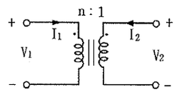
- 1
- 0
- n
- 1/n
(정답률: 56%)
64. f(t)=u(t-a)-u(t-b)의 라플라스 변환은?
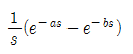
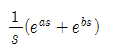
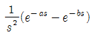
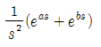
(정답률: 56%)
65. 복소수
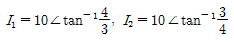
일 때, I=I1+I2는 얼마인가?- -2+j2
- 14+j14
- 14+j4
- 14+j3
(정답률: 60%)
66. 그림과 같은 회로의 전달함수는? (단, e1은 입력, e2는 출력이다.)
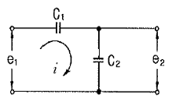
- C1+C2
- C2/C1
- C1/C1+C2
- C2/C1+C2
(정답률: 52%)
67. 그림과 같은 4단자망의 영상 전달정수 θ는?
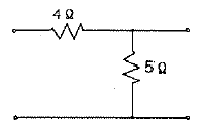
- √5
- loge√5
- loge1/√5
- 5loge√5
(정답률: 52%)
68. 그림(a)의 회로를 그림 (b)와 같은 등가회로로 구성하고자 한다. 이때 V 및 R의 값은?
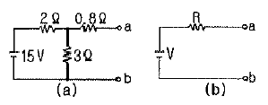
- 6V, 2Ω
- 6V, 6Ω
- 9V, 2Ω
- 9V, 6Ω
(정답률: 61%)
69. 구형파의 파형률(㉠)과 파고율(㉡)은?
- ㉠ 1, ㉡ 0
- ㉠ 1.11, ㉡ 1.414
- ㉠ 1, ㉡ 1
- ㉠ 1.57, ㉡ 2
(정답률: 70%)
70. 모든 초기값을 0으로 할 때, 출력과 입력의 비를 무엇이라 하는가?
- 전달 함수
- 충격 함수
- 경사 함수
- 포물선 함수
(정답률: 71%)
71. 그림과 같은 파형의 라플라스 변환은?
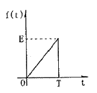
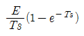
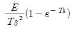
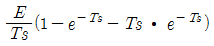
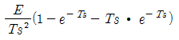
(정답률: 43%)
72. 그림에서 전류 i5의 크기는?
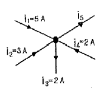
- 3A
- 5A
- 8A
- 12A
(정답률: 73%)
73. 한상의 직렬 임피던스R r=6Ω,XL=8Ω인 △결선 평형 부하가 있다. 여기에 선간전압 100V인 대칭 3상 교류 전압을 가하면 선전류는 몇 A인가?
- 10√3/3
- 3√3
- 10
- 10√3
(정답률: 69%)
74. 그림과 같은 회로에서 S를 열었을 때 전류계는 10A를 지시하였다. S를 닫았을 때 전류계의 지시는 몇 A인가?
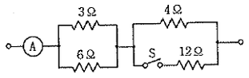
- 10
- 12
- 14
- 16
(정답률: 63%)
75. 2전력계법으로 평형 3상 전력을 측정하였더니 각각의 전력계가 500W, 300W를 지시하였다면 전 전력[W]은?
- 200
- 300
- 500
- 800
(정답률: 72%)
76. 그림과 같은 회로에서 a-b 양단간의 전압은 몇 V인가?
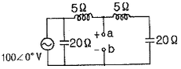
- 80
- 90
- 120
- 150
(정답률: 23%)
77. 역률이 60%이고, 1상의 임피던스가 60Ω인 유도부하를 △로 결선하고 여기에 병렬로 저항 20Ω을 Y결선으로 하여 3상 선간전압 200V를 가할 때의 소비전력[W]은?
- 3200
- 3000
- 2000
- 1000
(정답률: 37%)
78. 회로에서 각 계기들의 지시값은 다음과 같다. 전압계는 240V, 전류계는 5A, 전력계는 720W이다. 이때 인덕턴스 L[H]는 얼마인가?(단, 전원주파수는 60Hz이다.)
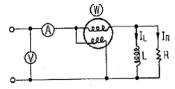
- 1/π
- 1/2π
- 1/3π
- 1/4π
(정답률: 55%)
79. 다음 회로에 대한 설명으로 옳은 것은?
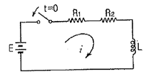
- 이 회로의 시정수는
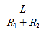
이다. - 이 회로의 특성근은
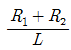
이다. - 정상전류 값은
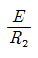
이다. - 이 회로의 전류값은
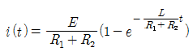
(정답률: 59%)
80. 3상 평형 부하가 있다. 선간전압이 200V, 역률이 0.8이고 소비전력이 10kW라면 선전류는 약 몇 A인가?
- 30
- 32
- 34
- 36
(정답률: 58%)
5과목: 전기설비기술기준 및 판단 기준
81. 저압전로에서 그 전로에 지락이 생겼을 경우 0.5초 이내에 자동적으로 전로를 차단하는 장치를 시설하는 경우에는 제3종 접지 공사의 접지저항 값을 몇 Ω까지 허용할 수 있는가? (단, 자동 차단기의 정격감도전류는 30mA이다.)(관련 규정 개정전 문제로 여기서는 기존 정답인 4번을 누르면 정답 처리됩니다. 자세한 내용은 해설을 참고하세요.)
- 10
- 100
- 300
- 500
(정답률: 45%)
82. 애자사용공사에 의한 저압 옥내배선을 시설할 때, 전선 상호간의 간격은 몇 cm 이상이어야 하는가?
- 2
- 4
- 6
- 8
(정답률: 51%)
83. “지중관로”에 대한 정의로 옳은 것은?
- 지중 전선로, 지중 약전류 전선로와 지중 매설지선 등을 말한다.
- 지중 전선로, 지중 약전류 전선로와 복합 케이블 선로, 기타 이와 유사한 것 및 이들에 부속하는 지중함을 말한다.
- 지중 전선로, 지중 약전류 전선로, 지중에 시설하는 수관 및 가스관과 지중 매설지선을 말한다.
- 지중 전선로, 지중 약전류 전선로, 지중 광섬유 케이블 선로, 지중에 시설하는 수관 및 가스관과 이와 유사한 것 및 이들에 부속하는 지중함 등을 말한다.
(정답률: 64%)
84. 고압 가공전선에 케이블을 사용하는 경우의 조가용선 및 케이블의 피복에 사용하는 금속체에는 몇 종 접지공사를 하여야 하는가?(관련 규정 개정전 문제로 여기서는 기존 정답인 3번을 누르면 정답 처리됩니다. 자세한 내용은 해설을 참고하세요.)
- 제 1종 접지공사
- 제 2종 접지공사
- 제 3종 접지공사
- 특별 제 3종 접지공사
(정답률: 57%)
85. 방전등용 안정기로부터 방전관까지의 전로를 무엇이라 하는가?
- 가섭선
- 가공 인입선
- 관등회로
- 지중관로
(정답률: 67%)
86. 345kV의 송전선을 사람이 쉽게 들어갈 수 없는 산지에 시설하는 경우 전선의 지표상 높이는 몇 m 이상이어야 하는가?
- 7.28
- 8.28
- 7.85
- 8.85
(정답률: 51%)
87. 전기설비기술기준에서 정하는 15kV이상, 25kV 미만인 특고압 가공전선과 그 지지물, 완금류, 지주 또는 지선 사이의 이격거리는 몇 cm 이상이어야 하는가?(관련 규정 개정전 문제로 여기서는 기존 정답인 1번을 누르면 정답 처리됩니다. 자세한 내용은 해설을 참고하세요.)
- 20
- 25
- 30
- 40
(정답률: 50%)
88. 고압 지중케이블로서 직접 매설식에 의하여 콘크리트제 기타 견고한 관 또는 트라프에 넣지 않고 부설할 수 있는 케이블은?
- 비닐외장 케이블
- 고무외장 케이블
- 클로로프렌 외장 케이블
- 콤바인 덕트 케이블
(정답률: 65%)
89. 관, 암거 기타 지중전선을 넣은 방호장치의 금속제 부분 및 지중전선의 피복으로 사용하는 금속체에는 몇 종 접지공사를 하여야 하는가?(관련 규정 개정전 문제로 여기서는 기존 정답인 3번을 누르면 정답 처리됩니다. 자세한 내용은 해설을 참고하세요.)
- 제 1종 접지공사
- 제 2종 접지공사
- 제 3종 접지공사
- 특별 제 3종 접지공사
(정답률: 59%)
90. 전기 울타리의 시설에 관한 설명으로 틀린 것은?
- 전원 장치에 전기를 공급하는 전로의 사용전압은 600V 이하이어야 한다.
- 사람이 쉽게 출입하지 아니하는 곳에 시설한다.
- 전선은 지름 2mm 이상의 경동선을 사용한다.
- 수목 사이의 이격거리는 30cm 이상이어야 한다.
(정답률: 57%)
91. 전선의 접속법을 열거한 것 중 틀린 것은?
- 전선의 세기를 30% 이상 감소시키지 않는다.
- 접속 부분을 절연 전선의 절연물과 동등 이상의 절연 효력이 있도록 충분히 피복한다.
- 접속 부분은 접속관, 기타의 기구의 사용한다.
- 알루미늄 도체의 전선과 동 도체의 전선을 접속할 때에는 전기적 부식이 생기지 않도록 한다.
(정답률: 68%)
92. 가공전선로의 지지물에 하중이 가하여지는 경우에 그 하중을 받는 지지물의 기초의 안전율은 일반적인 경우 얼마 이상이어야 하는가?(오류 신고가 접수된 문제입니다. 반드시 정답과 해설을 확인하시기 바랍니다.)
- 1.2
- 1.5
- 1.8
- 2
(정답률: 36%)
93. 소맥분, 전분 기타의 가연성 분진이 존재하는 곳의 저압 옥내배선으로 적합하지 않은 공사방법은?
- 케이블 공사
- 두께 2mm 이상의 합성수지관 공사
- 금속관 공사
- 가요 전선관 공사
(정답률: 51%)
94. 도로에 시설하는 가공 직류 전차 선로의 경간은 몇 m 이하인가?
- 30
- 60
- 80
- 100
(정답률: 53%)
95. 도로, 주차장 또는 조영물의 조영재에 고정하여 시설하는 전열장치의 발열선에 공급하는 전로의 대지전압은 몇 V 이하이어야 하는가?
- 30
- 60
- 220
- 300
(정답률: 65%)
96. 철큰 콘크리트주로서 전장이 15m이고, 설계하중이 7.8kN이다. 이 지지물을 논, 기타 지반이 약한 곳 이외에 기초 안전율의 고려 없이 시설하는 경우에 그 묻히는 깊이는 기준보다 몇 cm를 가산하여 시설하여야 하는가?
- 10
- 30
- 50
- 70
(정답률: 62%)
97. 66kV에 사용되는 변압기를 취급자 이외의 자가 들어가지 않도록 적당한 울타리, 담 등을 설치하여 시설하는 경우 울타리, 담 등의 높이와 울타리, 담등으로부터 충전부분까지의 거리의 합계는 최소 몇 m 이상으로 하여야 하는가?
- 5
- 6
- 8
- 10
(정답률: 50%)
98. 가공 전선로에 사용하는 지지물의 강도 계산에 적용하는 병종 풍압하중은 갑종 풍압하주의 몇 %를 기초로 하여 계산한 것인가?
- 30
- 50
- 80
- 110
(정답률: 60%)
99. 저압 옥내배선에서 시행하는 공사 내용 중 틀린 것은?
- 합성수지 몰드공사에서는 절연전선을 사용한다.
- 합성수지관 안에서는 접속점이 없어야 한다.
- 가요전선관은 2종 금속제 가요전선관이어야 한다.
- 사용전압이 400V 이상인 금속관에는 제 3종 접지공사를 한다.
(정답률: 56%)
100. 케이블 트레이 공사에 사용하는 케이블 트레이의 최소 안전율은?
- 1.5
- 1.8
- 2.0
- 3.0
(정답률: 56%)
따라서, 공간도체에서 전류가 정상 상태일 때(divi=0), 전류 밀도의 발산은 0이 되어야 합니다. 이는 전류가 어떤 닫힌 경로를 따라서 흐르는 경우, 그 경로를 둘러싸는 면에서의 전류 밀도의 총합이 0이 되어야 한다는 것을 의미합니다. 이는 전류가 보존되어야 한다는 법칙으로 해석할 수 있습니다.